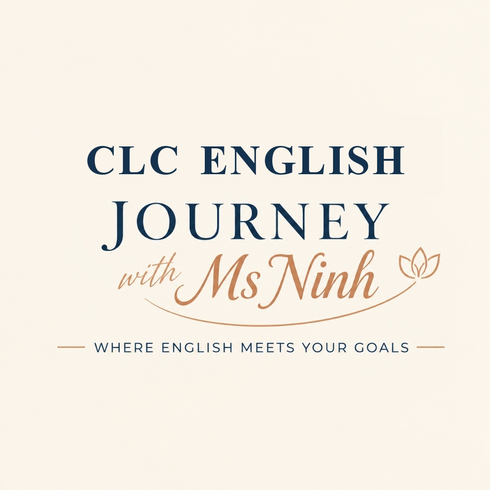

Cambridge & Look Standard 4-Skill Coaching System • From Solid Foundation (Band 5.0) to Pinnacle CLC Mastery
— Where English Meets Your Goals —
Tất cả các thẻ đã được dịch nghĩa tiếng Việt và ví dụ song ngữ chuẩn mực. Nhấp để tải file TSV về máy để con học 5 phút mỗi ngày:
1. Kết nối iPhone/iPad cùng mạng Wi-Fi gia đình với máy tính này.
2. Mở Camera điện thoại quét mã QR bên cạnh để truy cập giao diện cảm ứng mượt mà.
3. Con có thể lật thẻ Flashcard 3D, nghe loa phát âm bản ngữ và làm trắc nghiệm rất dễ dàng.